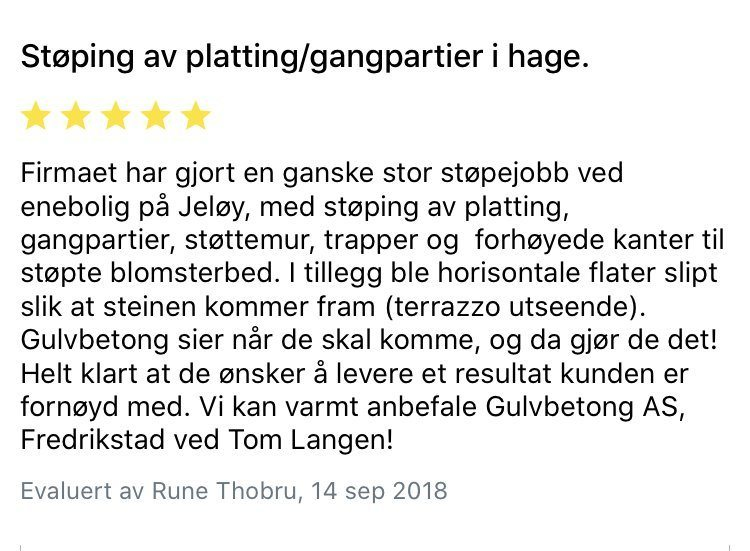
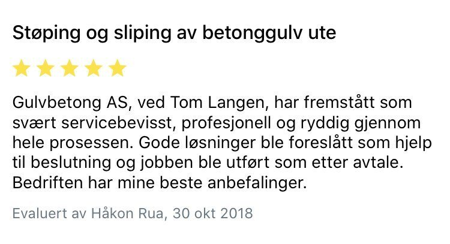
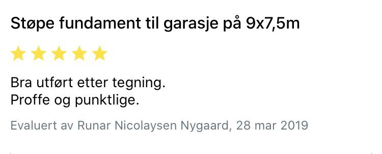
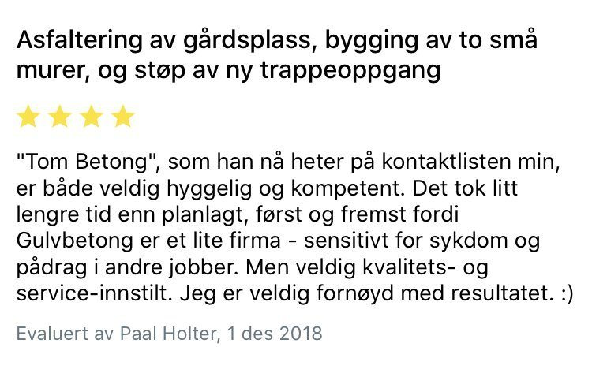

Håndverk som
snakker for seg.
Her ser du bilder fra prosjekter jeg har utført, med en kort beskrivelse av arbeidet.
Gulv, trapp og støttemurer
Her støpte jeg gulv, trapp og støttemurer. Kunden valgte en brettskurt overflate på områdene som brukes mest. Resten av gulvet er stålglattet.
Betong som følger terrenget
Arbeidet omfattet graving, støping av støttemur på fjell og støping av gulv, plattinger, gangarealer, trapper og blomsterbed. De synlige, horisontale betongflatene er slipt for å få frem steinene i betongen.
Kundens egen vurdering
Les flere kundeomtaler
Betongtrapp i Oslo
Betongtrapp i Darres gate 2 ved Waldemar Thranes gate i Oslo. Trappen er tilpasset den eksisterende bygningen og terrenget.
Kundens egen vurdering
Les flere kundeomtaler
Slipt betonggulv
Slipt betonggulv i Larkollen.
Bordforskalet støttemur
Støttemur støpt med bordforskaling og tilpasset fjellet.
Garasjeplate og ringmur
Støpt og stålglattet garasjegulv med ringmur av Leca U-blokk. Ringmuren er pusset på innsiden og utsiden.
Kundens egen vurdering
Les flere kundeomtaler
Utgraving, trapp og mur
Her gravde jeg ut og støpte en støttemur med bordforskaling. Gangarealene og trinnene har en brettskurt overflate.
Fra utgraving til garasje
Utgraving og støp av garasje.
Kundens egen vurdering
Les flere kundeomtaler
Et solid utgangspunkt for annekset
Arbeidet omfattet støping av betongplate og grunnmur til et anneks, tømrer- og snekkerarbeid og montering av et skyvedørsfelt.